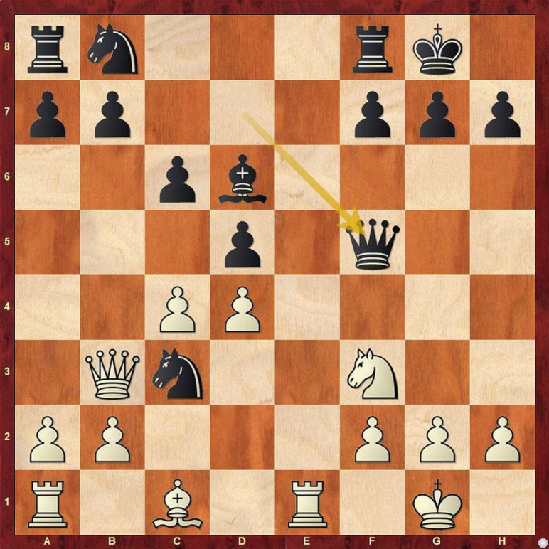

Свен Ма́гнус Э́эн Ка́рлсен (норв. Sven Magnus Øen Carlsen; род. 30 ноября 1990 года, Тёнсберг, губерния Вестфолл, Норвегия) — норвежский шахматист, 16-й (действующий) чемпион мира по шахматам (2013). Чемпион мира по шахматам в трёх категориях: с 2013 года — чемпион мира по классическим шахматам; в 2014—2016, 2019 годах — чемпион мира по рапиду; в 2014—2015, 2017—2019 годах — чемпион мира по блицу.
Ян Алекса́ндрович Непо́мнящий (род. 14 июля 1990, Брянск) — российский шахматист, гроссмейстер (2007). Чемпион Европы 2010 года. Двукратный чемпион России (2010 и 2020), двукратный победитель командного чемпионата мира в составе команды России (2013 и 2019), победитель Турнира претендентов по шахматам (2020/2021). Спортивное прозвище — «Непо».
Лучшая партия
В четвёртой партии чемпион устроил сопернику проверку русской партией. Но российский претендент оказался полностью к ней готов.
